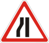
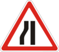
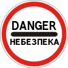
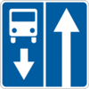
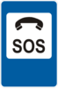
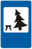
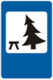

33. Дорожные знаки
Знаки 1.1 и 1.2 предупреждают о закруглении дороги радиусом менее 500 м вне населенных пунктов и менее 150 м – в населенных пунктах или о закруглении с ограниченной обзорностью.
Участок дороги с двумя и более расположенными один за другим опасными поворотами: 1.3.1 – с первым поворотом направо, 1.3.2 – с первым поворотом налево.
Знаки ( 1.4.1 движение направо, 1.4.2 – движение налево ) показывают направление поворота дороги, обозначенной знаками 1.1 и 1.2, направление объезда препятствия на дороге, а знак 1.4.1, кроме того, – направление объезда центра перекрестка с круговым движением; знак 1.4.3 (движение направо или налево) показывает направление движения на Т-образных перекрестках, разветвлениях дорог или объезда ремонтируемого участка дороги.

 
1.5.1-1.5.3
«Сужение дороги».

1.5.1-1.5.3
«Сужение дороги».
Знак
1.5.1
– сужение дороги с обеих сторон,
1.5.2
– с правой,
1.5.3
– с левой стороны.
 1.6
«Крутой подъем».
1.6
«Крутой подъем».
Знаки
1.6
и
1.7
предупреждают о приближении к подъему или спуску, на котором действуют требования
раздела 28
данных Правил.
Выезд на берег водоема, в том числе на паромную переправу (применяется с табличкой 7.11 ).
Приближение к сооружению, не имеющему искусственного освещения, обзорность въездного портала которого ограничена или на подъезде к которому сужена проезжая часть.
Участок дороги, имеющий неровности проезжей части – волнистости, наплывы, вспучивания.
Участок дороги с буграми, наплывами или неплавным сопряжением конструкций мостов. Знак также может применяться перед искусственно создаваемыми буграми в местах, где необходимо принудительно ограничить скорость движения транспортных средств (опасные выезды с прилегающих территорий, места с интенсивным движением детей через дорогу и т. п.).
 1.12
«Выбоина».
1.12
«Выбоина».
Участок дороги с выбоинами или проседаниями дорожного покрытия на проезжей части.
 1.13
«Скользкая дорога».
1.13
«Скользкая дорога».
Участок дороги с повышенной скользкостью проезжей части.
Участок дороги, на котором возможен выброс гравия, щебня и т.п. из-под колес транспортных средств.
Повышенная, заниженная, разрушенная обочина или обочина, на которой выполняются ремонтные работы.
Участок дороги, на котором могут быть падения камней, обвалы, оползни.
Участок дороги, на котором возможен сильный боковой ветер или его внезапные порывы.
Участок дороги, проходящий вблизи аэродрома или над которым самолеты или вертолеты пролетают на небольшой высоте.
Место пересечения дороги с трамвайными путями на перекрестке с ограниченной обзорностью или вне его.
 1.21
«Пересечение равнозначных дорог».
1.21
«Пересечение равнозначных дорог».
 1.22
«Пересечение с второстепенной дорогой».
1.22
«Пересечение с второстепенной дорогой».


 1.23.1-1.23.4
«Прилегание второстепенной дороги».
1.23.1-1.23.4
«Прилегание второстепенной дороги».
Знак
1.23.1
– прилегание с правой стороны,
1.23.2
– с левой стороны,
1.23.3
– с правой и левой стороны,
1.23.4
– с левой и правой стороны.
Перекресток, пешеходный переход или участок дороги, движение на котором регулируется светофором.
Приближение к разводному мосту.
Начало участка дороги (проезжей части) со встречным движением после одностороннего.
Обозначение не оборудованного шлагбаумом переезда через железную дорогу с одним путем.
Обозначение не оборудованного шлагбаумом переезда через железную дорогу с двумя и более путями.
Дополнительное предупреждение о приближении к железнодорожному переезду вне населенных пунктов.
 1.32
«Пешеходный переход».
1.32
«Пешеходный переход».
Приближение к нерегулируемому пешеходному переходу, обозначенному соответствующими дорожными знаками или дорожной разметкой.
 1.33
«Дети».
1.33
«Дети».
Участок дороги, на котором возможно появление детей с территории детского учреждения (дошкольное учреждение, школа, оздоровительный лагерь и т. п.), прилегающий непосредственно к дороге.
Участок дороги, на котором возможно появление велосипедистов, или место пересечения с велосипедной дорожкой вне перекрестка.
Участок дороги, на котором возможно появление скота.
Участок дороги, на котором возможно появление диких животных.
Участок дороги, на котором выполняются дорожные работы.
Участок дороги, где сужение проезжей части вызывает заторы в дорожном движении вследствие выполнения дорожных работ или по иным причинам.
 1.39
«Иная опасность (аварийно опасный участок)».
1.39
«Иная опасность (аварийно опасный участок)».
Опасный участок дороги в местах, где ширина проезжей части, радиусы закруглений и т. п. не соответствуют требованиям строительных норм, а также место или участок концентрации дорожно-транспортных происшествий.
В случае установления знака
1.39
в местах или на участках концентрации дорожно-транспортных происшествий в зависимости от вида опасности вместе с этим знаком обязательно устанавливаются таблички
 7.21.1-7.21.4.
7.21.1-7.21.4.
Переход дороги с усовершенствованным покрытием в гравийную или грунтовую дорогу.
1.6
и
1.7
устанавливаются непосредственно перед началом подъемов или спусков, расположенных один за другим.
1.23.1-1.23.4
изображения прилегания соответствует реальной конфигурации перекрестка.
1.23.3
и
1.23.4
устанавливаются, когда расстояние между прилеганиями второстепенных дорог
менее 50 м
в населенных пунктах и
100 м
– вне их.
1.13-1.16,
1.25,
1.27,
1.28,
1.33
и
1.37,
а в населенных пунктах знаки
1.33
и
1.37
повторяются. Следующий знак устанавливается на расстоянии
не менее 50 м
до начала опасного участка.
1.12,
1.14,
1.15,
1.37
и
1.38
– временные и устанавливаются на период, необходимый для выполнения соответствующих работ на дороге.
Водитель должен уступить дорогу транспортным средствам, подъезжающим к нерегулируемому перекрестку по главной дороге, а при наличии таблички 7.8 – транспортным средствам, движущимся по главной дороге.
Запрещается проезд без остановки перед разметкой
1.12
(стоп-линия) (см. приложение 2), а если она отсутствует – перед знаком. Необходимо уступить дорогу транспортным средствам, которые следуют по пересекаемой дороге, а при наличии таблички
7.8
– транспортным средствам, двигающимся по главной дороге, а также справа по равнозначной дороге.
Предоставляется право первоочередного проезда нерегулируемых перекрестков.
Отменяется право первоочередного проезда нерегулируемых перекрестков.
Запрещается въезд на узкий участок дороги, если это может затруднить встречное движение. Водитель должен уступить дорогу встречным транспортным средствам, находящимся на узком участке.
Узкий участок дороги, во время движения на котором водитель имеет преимущество относительно встречных транспортных средств.
Если знак 2.2 установлен перед железнодорожным переездом, который не охраняется и не оборудован светофорной сигнализацией, водитель должен остановиться перед стоп-линией, а при ее отсутствии – перед этим знаком.
 3.1
«Движение запрещено».
3.1
«Движение запрещено».
Запрещается движение всех транспортных средств в случаях, когда:
- начало пешеходной зоны, обозначено знаком 5.33;
- дорога и(или) улица находится в аварийном состоянии и непригодна для движения транспортных средств; в этом случае обязательно устанавливается знак  3.43.
 3.2
«Движение механических транспортных средств запрещено».
3.2
«Движение механических транспортных средств запрещено».
Запрещается движение грузовых автомобилей и составов транспортных средств с разрешенной максимальной массой свыше 3,5 т (если на знаке не указана масса) или превышающей указанную на знаке, а также тракторов, самоходных машин и механизмов.
Запрещается движение грузовых автомобилей и тракторов с прицепами любого типа, а также буксировка механических транспортных средств.
Запрещается движение тракторов, самоходных машин и механизмов.
 3.7
«Движение на мопедах запрещено».
3.7
«Движение на мопедах запрещено».
Запрещается движение на мопедах и велосипедах с подвесным двигателем.
Запрещается движение гужевых повозок (саней), животных под седлом или вьюком, а также прогон скота.
Запрещается движение транспортных средств, в том числе их составов, общая фактическая масса которых превышает указанную на знаке.
Запрещается движение транспортных средств, у которых фактическая нагрузка на любую ось больше указанной на знаке.
Запрещается движение транспортных средств, габаритная ширина которых (с грузом и без него) больше указанной на знаке.
Запрещается движение транспортных средств, габаритная высота которых (с грузом или без него) больше указанной на знаке.
Запрещается движение транспортных средств, габаритная длина которых (с грузом или без него) превышает указанную на знаке.
Запрещается движение транспортных средств с дистанцией между ними меньше указанной на знаке.
 3.21
«Въезд запрещен».
3.21
«Въезд запрещен».
Запрещает въезд всех транспортных средств с целью:
- предотвращения встречного движения транспортных средств на участках дорог с односторонним движением;
- предотвращения выезда транспортных средств навстречу общему потоку на дорогах, обозначенных знаком  5.8;
- организации отдельного въезда и выезда на площадки, которые используются для стоянки транспортных средств, площадки отдыха, автозаправочные станции и пр.
-
предотвращения въезда на отдельную полосу движения, при этом знак
3.21
должен использоваться вместе с табличкой
 7.9.
7.9.
 3.22
«Поворот направо запрещен».
3.22
«Поворот направо запрещен».
 3.23
«Поворот налево запрещен».
3.23
«Поворот налево запрещен».
Запрещается поворот налево транспортных средств. При этом разворот разрешается.
Запрещается разворот транспортных средств. При этом поворот налево разрешается.
Запрещается обгон всех транспортных средств (кроме одиночных, движущихся со скоростью менее 30 км/ч).
Одиночными считаются единичные транспортные средства, автопоезда, а также буксирующее транспортное средство в сцепке с буксируемым.
Запрещается грузовым автомобилям с разрешенной максимальной массой свыше 3,5 т обгонять все транспортные средства (кроме одиночных, движущихся со скоростью менее 30 км/ч ). Тракторам запрещается обгон всех транспортных средств, кроме одиночных велосипедов, гужевых повозок (саней).
 3.29
«Ограничение максимальной скорости».
3.29
«Ограничение максимальной скорости».
Запрещается движение со скоростью, превышающей указанную на знаке.
 3.31
«Зона ограничения максимальной скорости».
3.31
«Зона ограничения максимальной скорости».
Запрещается в зоне (населенный пункт, микрорайон, зона отдыха и т. п.) движение со скоростью, превышающей указанную на знаке.
Запрещается пользование звуковыми сигналами, кроме случаев, когда без этого невозможно предотвратить дорожно-транспортное происшествие.
 3.34
«Остановка запрещена».
3.34
«Остановка запрещена».
Запрещаются остановка и стоянка транспортных средств, кроме такси, осуществляющего посадку или высадку пассажиров (выгрузку или погрузку груза).
 3.35
«Стоянка запрещена».
3.35
«Стоянка запрещена».
Запрещается стоянка всех транспортных средств.
 3.37
«Стоянка запрещена по четным числам месяца».
3.37
«Стоянка запрещена по четным числам месяца».
Определяет территорию в населенном пункте, на которой продолжительность стоянки ограничена независимо от того, взимается ли за это плата. В нижней части знака могут быть указаны условия ограничения стоянки. В соответствующих случаях на знаке или дополнительных табличках
 7.4.1-7.4.7,
7.19
указываются дни и время суток, на протяжении которых действует ограничение, а также его условия.
7.4.1-7.4.7,
7.19
указываются дни и время суток, на протяжении которых действует ограничение, а также его условия.
Запрещается стоянка в обозначенной зоне продолжительностью более указанной на табличках
7.4.1-7.4.7,
7.19.
Запрещается проезд без остановки возле таможни.
Запрещается проезд без остановки перед контрольными пунктами (пост милиции, карантинный пост, приграничная зона, закрытая территория, пункт оплаты проезда на платных дорогах и т. п.).
Применяется только при условии обязательного поэтапного ограничения скорости движения путем предварительной установки необходимого количества знаков
3.29
и(или)
3.31
в соответствии с требованиями
пункта 12.10
настоящих Правил.
Определяет одновременно конец действия всех запретов и ограничений, введенных запрещающими дорожными знаками
3.20,
3.25,
3.27,
3.29,
3.33-3.37.
Запрещает движение всех без исключения пользователей дорог, улиц, железнодорожных переездов в связи с дорожно-транспортным происшествием, аварией, проявлением стихийного бедствия или иной опасностью для движения (оползень, падение камней, сильный снегопад, наводнение и т. п.).
Не распространяется действие знаков:
3.1,
3.2,
3.21-3.24,
3.34
– на транспортные средства, движущиеся по установленным маршрутам;
3.1,
3.2,
3.35-3.38,
а также знака
3.34
при наличии под ним таблички
 7.18
на водителей-инвалидов, управляющих мотоколяской или автомобилем, обозначенными опознавательным знаком
7.18
на водителей-инвалидов, управляющих мотоколяской или автомобилем, обозначенными опознавательным знаком
 «Инвалид»;
«Инвалид»;
3.1-3.8,
3.11
– на транспортные средства, обслуживающие граждан или принадлежащие гражданам, которые проживают или работают в обозначенной зоне, а также на транспортные средства, которые обслуживают предприятия, которые расположенные в обозначенной зоне. В таких случаях транспортные средства должны въезжать в обозначенную зону и выезжать из нее на ближайшем перекрестке к месту назначения;
3.3 – на грузовые автомобили, которые имеют косую белую полосу на внешней боковой поверхности или перевозят группы людей;
3.35-3.38
– на такси с включенным таксометром.
3.22-3.24
распространяется на пересечение проезжих частей и прочие места, перед которыми установлен один из этих знаков.
3.1-3.15,
3.19-3.21,
3.25,
3.27,
3.29,
3.33-3.37
– от места установки до ближайшего перекрестка за ним, а в населенных пунктах, где нет перекрестков, – до конца населенного пункта. Действие знаков не прерывается в местах выезда с прилегающих к дороге территорий и в местах пересечения (прилегания) с полевыми, лесными и другими дорогами без покрытия, перед которыми не установлены знаки приоритета.
3.31
и
3.38
распространяется на всю соответствующую зону.
3.34-3.37
распространяется только на ту сторону дороги, на которой они установлены.
3.29,
установленного перед населенным пунктом, обозначенным знаком
 5.45,
распространяется до этого знака.
3.37
время перестановки транспортных средств с одной стороны дороги на другую –
с 19 до 24 ч.
5.45,
распространяется до этого знака.
3.37
время перестановки транспортных средств с одной стороны дороги на другую –
с 19 до 24 ч.
Зона действия знаков может быть уменьшена:
для знаков 3.20 и 3.33 – применением таблички 7.2.1;
для знаков
3.25,
3.27,
3.29,
3.31,
3.38
– установкой в конце зоны их действия соответственно знаков
3.26,
3.28,
3.30,
3.32,
3.39;
для знака 3.29 – изменением на знаке величины максимальной скорости движения;
для знаков
3.34-3.37
– табличкой
7.2.2
в начале зоны действия, а также установкой в конце их зоны действия дублирующих знаков
3.34-3.37
с табличкой
7.2.3.
3.34
может применяться вместе с разметкой
 1.4,
знак
3.35
– с разметкой
1.4,
знак
3.35
– с разметкой
 1.10,
при этом зона их действия определяется по длине линии разметки.
3.5-3.11
на одном знаке может быть нанесено не более трех их символов, разделенных между собой.
1.10,
при этом зона их действия определяется по длине линии разметки.
3.5-3.11
на одном знаке может быть нанесено не более трех их символов, разделенных между собой.
 4.2
«Движение направо».
4.2
«Движение направо».
Движение только в направлениях, указанных стрелками на знаках
4.1-4.6.
 4.7
«Объезд препятствия с правой стороны».
4.7
«Объезд препятствия с правой стороны».
Объезд только со стороны, показанной стрелкой на знаках
4.7
и
4.8.
 4.9
«Объезд препятствия с правой или левой стороны».
4.9
«Объезд препятствия с правой или левой стороны».
Требует объезда клумбы (центрального островка) в направлении, показанном стрелками на перекрестке с круговым движением.
Разрешается движение только легковых автомобилей, автобусов, мотоциклов, маршрутных транспортных средств и грузовых автомобилей, разрешенная максимальная масса которых не превышает 3,5 т.
Движение только на велосипедах. Если нет тротуара или пешеходной дорожки, разрешается также движение пешеходов.
Движение только пешеходов.
Движение пешеходов и велосипедистов.
Движение только всадников.
Движение с не меньшей скоростью, чем указано на знаке, но и не большей, чем это предусмотрено пунктами 12.4 - 12.7 данных Правил.
Показывает разрешенное направление движения транспортных средств с опознавательным знаком
 «Знак опасности».
«Знак опасности».
4.1-4.6
не распространяется на транспортные средства, движущиеся по установленным маршрутам. Действие знаков
4.1-4.6
распространяется на пересечение проезжих частей, перед которым они установлены. Действие знака
4.1,
установленного в начале дороги или за перекрестком, распространяется на участок дороги до ближайшего перекрестка. Знак не запрещает поворот направо во дворы и на другие примыкающие к дороге территории.
 5.1
«Автомагистраль».
5.1
«Автомагистраль».
Дорога, на которой действуют особые условия дорожного движения, предусмотренные разделом 27 данных Правил.
Дорога, на которой действуют особые условия дорожного движения, предусмотренные разделом 27 данных Правил (за исключением пункта 27.3 данных Правил).
Дорога или отделенная проезжая часть, по которой движение транспортных средств по всей ширине осуществляется только в одном направлении.
 5.6
«Конец дороги с односторонним движением».
5.6
«Конец дороги с односторонним движением».
Указывают направление движения на пересекаемой дороге, если на ней организовано одностороннее движение. Движение транспортных средств по этой дороге или проезжей части разрешается только в направлении стрелки.
Дорога, на которой движение транспортных средств осуществляется по установленному маршруту по специально отведенной полосе навстречу общему потоку транспортных средств.
 5.9
«Конец дороги с полосой для движения маршрутных транспортных средств».
5.9
«Конец дороги с полосой для движения маршрутных транспортных средств».
 5.10.1
и
5.10.2
«Выезд на дорогу с полосой для движения маршрутных транспортных средств».
5.10.1
и
5.10.2
«Выезд на дорогу с полосой для движения маршрутных транспортных средств».
 5.11
«Полоса для движения маршрутных транспортных средств».
5.11
«Полоса для движения маршрутных транспортных средств».
Полоса предназначена только для транспортных средств, движущихся по установленным маршрутам попутно с общим потоком транспортных средств.
Действие знака распространяется на полосу движения, над которой он установлен. Действие знака, установленного справа от дороги, распространяется на правую полосу движения.
Начало участка дороги, на котором по одной или нескольким полосам направление движения может изменяться на противоположное.
Показывает количество полос на перекрестке и разрешенные направления движения по каждой из них.
 5.17.1
и
5.17.1
и
 5.17.2
«Направление движения по полосам».
5.17.2
«Направление движения по полосам».
 5.18
«Направление движения по полосе».
5.18
«Направление движения по полосе».
Показывает разрешенное направление движения по полосе.
Знак
5.18
со стрелкой, изображающей поворот налево иным образом, чем это предусмотрено данными Правилами, означает, что на данном перекрестке поворот налево или разворот осуществляется с выездом за пределы перекрестка направо и объездом клумбы (разделительного островка) в направлении стрелки.
Информирует водителей об использовании полосы для движения только определенных видов транспортных средств в указанных направлениях.
Если на знаке изображен знак, запрещающий или разрешающий движение каким-либо транспортным средствам, движение этих транспортных средств по ней соответственно запрещается или разрешается.
 5.20.1-5.20.3
«Начало дополнительной полосы движения».
5.20.1-5.20.3
«Начало дополнительной полосы движения».
Начало дополнительной полосы движения на подъеме или полосы торможения.
Если на знаке, установленном перед дополнительной полосой, изображен знак 4.16, водитель транспортного средства, которое не может продолжать движение на основной полосе с указанной или большей скоростью, должен перестроиться на дополнительную полосу движения.
Знак 5.21.1 указывает на конец дополнительной полосы или полосы разгона, 5.21.2 – на конец полосы, предназначенной для движения в данном направлении.
Место, где полоса для разгона прилегает к основной полосе движения на одном уровне с правой стороны.
Информирует о том, что дополнительная полоса движения прилегает к основной полосе движения на дороге с правой стороны.
Показывает направление объезда закрытого для движения участка проезжей части на дороге с разделительной полосой или направление движения для возвращения на проезжую часть справа.
Информирует водителя о расположении полосы, специально подготовленной для аварийной остановки транспортных средств в случае отказа тормозной системы.
 5.26
«Место для разворота».
5.26
«Место для разворота».
Обозначает место для разворота транспортных средств. Поворот налево запрещается.
Обозначает зону по длине для разворота транспортных средств. Поворот налево запрещается.
Показывают рекомендуемое направление движения для грузовых автомобилей и самоходных машин.
Дорога, не имеющая сквозного проезда.
Зона действия знака распространяется до ближайшего перекрестка.
 5.31
«Жилая зона».
5.31
«Жилая зона».
Информирует о въезде на территорию, где действуют особые условия дорожного движения, предусмотренные данными Правилами.
Информирует об особенностях и условиях дорожного движения, предусмотренных данными Правилами.
 5.35.1
и
5.35.1
и
 5.35.2
«Пешеходный переход».
5.35.2
«Пешеходный переход».
Знак
5.35.1
устанавливается справа от дороги на ближней границе перехода, а знак
5.35.2
– слева от дороги на дальней границе перехода.
 5.37.1
и
5.37.1
и
 5.37.2
«Надземный пешеходный переход».
5.37.2
«Надземный пешеходный переход».
 5.38
«Место для стоянки».
5.38
«Место для стоянки».
Применяется для обозначения мест и площадок для стоянки транспортных средств. Знак с буквой «Р» и символом крыши применяется для крытых стоянок. Знак с буквой «Р» и символом автобуса применяется для крытых стоянок с возможностью пересадки на маршрутные транспортные средства.
Определяет зону, где разрешена стоянка, при условиях, которые отмечаются на знаке или дополнительных табличках под ним.
Знак обозначает начало посадочной площадки автобуса. За пределами населенных пунктов знак может быть установлен на павильон со стороны прибытия маршрутных транспортных средств.
В нижней части знака может быть нанесено изображение таблички 7.2.1 с указанием протяженности посадочной площадки.
Знак может устанавливаться в конце посадочной площадки пункта остановки автобуса.
 5.42.1
«Пункт остановки трамвая».
5.42.1
«Пункт остановки трамвая».
Знак обозначает начало посадочной площадки трамвая.
В нижней части знака может быть нанесено изображение таблички 7.2.1 с указанием протяженности посадочной площадки.
Знак может устанавливаться в конце посадочной площадки пункта остановки трамвая.
Знак обозначает начало посадочной площадки троллейбуса. За пределами населенных пунктов знак может быть установлен на павильоне со стороны прибытия маршрутных транспортных средств.
В нижней части знака может быть нанесено изображение таблички 7.2.1 с указанием протяженности посадочной площадки.
Знак может устанавливаться в конце посадочной площадки пункта остановки троллейбуса.
5.45
«Начало населенного пункта».
Наименование и начало застройки населенного пункта, в котором действуют требования данных Правил, определяющие порядок движения в населенных пунктах.
 5.46
«Конец населенного пункта».
5.46
«Конец населенного пункта».
Место, с которого на данной дороге утрачивают силу требования данных Правил, определяющие порядок движения в населенных пунктах.
5.45
и
5.46
устанавливаются на фактической границе застройки, прилегающей к дороге.
 5.47
«Начало населенного пункта».
5.47
«Начало населенного пункта».
Наименование и начало застройки населенного пункта, в котором на данной дороге не действуют требования данных Правил, определяющие порядок движения в населенных пунктах.
 5.48
«Конец населенного пункта».
5.48
«Конец населенного пункта».
Конец населенного пункта, обозначенного знаком
5.47.
Информирует об общих ограничениях скорости на территории Украины.
Информирует о возможности движения по горной дороге, в частности в случае переезда через перевал, название которого указывается в верхней части знака. Таблички 1, 2 и 3 – сменные. Табличка 1 красного цвета с надписью «Закрито» запрещает движение, зеленого с надписью «Відкрито» – разрешает. Таблички 2 и 3 белого цвета с надписями и обозначениями на них – черного. Если проезд открыт, на табличках 2 и 3 указания отсутствуют, проезд закрыт – на табличке 3 указывается населенный пункт, до которого дорога открыта, а на табличке 2 делается надпись «Відкрито до...».
 5.51
«Предварительный указатель направлений».
5.51
«Предварительный указатель направлений».
Направление движения к обозначенным на знаке населенным пунктам и другим объектам. На знаках могут быть нанесены изображения знаков
3.2-3.8,
3.11-3.20,
3.29,
3.31,
5.1,
5.3,
5.28.1-5.30,
5.61.1,

 



 6.1-6.24,
символы аэропорта, спортивные и прочие пиктограммы и т. п. В нижней части знака
5.51
указывается расстояние от места установки знака до перекрестка или начала полосы торможения.
6.1-6.24,
символы аэропорта, спортивные и прочие пиктограммы и т. п. В нижней части знака
5.51
указывается расстояние от места установки знака до перекрестка или начала полосы торможения.
Знак 5.51 используется также для того, чтобы указать на объезд участков дорог, на которых установлен один из запрещающих знаков 3.15-3.19.
Информирует о направлении движения к указанным на нем пунктам и достопримечательностям.
Информирует о направлениях движения к указанным на нем пунктам.
3.2-3.8,
3.11-3.20,
3.29,
3.31,
5.1,
5.3,
5.28.1-5.30,
6.1-6.24,
символы аэропорта, спортивные и прочие пиктограммы.
Маршрут движения на перекрестке в случае запрещения отдельных маневров или разрешенные направления движения на сложном перекрестке.
Маршрут объезда участка дороги, временно закрытого для движения.
Направление объезда участка дороги , который временно закрыт для движения.
Название объекта иного, чем населенный пункт (улица, речка, озеро, перевал, достопримечательность и др.).
Расстояние до населенных пунктов (км), расположенных на маршруте.
Расстояние от начала дороги (км).
Знаки 5.61.1 – номер, присвоенный дороге (маршруту); 5.61.2, 5.61.3 – номер и направление дороги (маршрута).
 5.62
«Место остановки».
5.62
«Место остановки».
Место остановки транспортных средств во время действия запрещающего сигнала светофора (регулировщика) или перед железнодорожными переездами, движение через которые регулируется светофорами.
Используется исключительно в пределах населенных пунктов, начало которых обозначено знаком
5.47,
– после такого знака и на границе начала плотной застройки непосредственно возле проезжей части (при условии наличия такой застройки).
Обозначает ограничение максимально разрешенной скорости до 60 км/ч.
Используется исключительно в пределах населенных пунктов, начало которых обозначено знаком
5.47,
– после такого знака и на границе окончания плотной застройки непосредственно возле проезжей части (при условии дальнейшего отсутствия такой застройки). Обозначает отмену ограничения максимально разрешенной скорости
в пределах 60 км/ч
и переход к стандартному скоростному режиму дороги, до установления этого знака.
Информирует, что после этого знака временно или постоянно изменена схема движения и(или) установлены новые дорожные знаки. Используется на протяжении не менее 3 месяцев в случае изменения движения на постоянной основе. Используется на протяжении необходимого промежутка времени в случае изменения движения на временной основе и устанавливается не меньше чем за 100 метров до первого временного знака.
 5.70
«Фото-, видеофиксирование нарушений Правил дорожного движения».
5.70
«Фото-, видеофиксирование нарушений Правил дорожного движения».
Указывает на возможность осуществления контроля за нарушениями Правил дорожного движения с помощью специальных технических и(или) технических средств.
Знаки
5.17.1
и
5.17.2
с соответствующим количеством стрелок применяются на дорогах, имеющих три полосы и более, когда в каждом направлении насчитывается неодинаковое количество полос движения.
При помощи знаков
5.17.1
и
5.17.2
со сменным изображением организуется реверсивное движение.
5.18,
разрешающие поворот налево с крайней левой полосы, разрешают также разворот с этой полосы.
Действие знаков
5.16
и
5.18,
установленных перед перекрестком, распространяется на весь перекресток, если последующие знаки
5.16
и
5.18,
установленные на нем, не дают других указаний.
5.31,
5.33
и
5.39
распространяется на всю обозначенную ими территорию.
Отдельные дворовые территории знаками
5.31
и
5.32
не обозначаются, но на таких территориях действуют требования
раздела 26
данных Правил.
5.51-5.54,
установленные вне населенного пункта, имеют зеленый или синий фон, если они установлены соответственно на автомагистрали или иной дороге. Вставка на синем или зеленом фоне означает, что движение к указанному населенному пункту или объекту осуществляется соответственно по иной дороге, чем автомагистраль, или по автомагистрали. Знаки
5.51-5.54,
установленные в населенном пункте, должны иметь белый фон. Вставки на синем или зеленом фоне означают, что движение к указанному населенному пункту или объекту осуществляется соответственно по иной дороге, чем автомагистраль, или по автомагистрали. Знак
5.53
на коричневом фоне информируют о направлении движения к достопримечательностям.
Є – Европейская сеть дорог (буквы и цифры белого цвета на зеленом фоне);
М – международные, Н – национальные (буквы и цифры белого цвета на красном фоне);
P – региональные, T – территориальные (буквы черного цвета на желтом фоне);
O – областные, C – районные (буквы белого цвета на синем фоне).
6.12
«Питьевая вода».
6.22
«Начало пешеходного маршрута».
6.23
«Пляж или бассейн».
6.24
«Достопримечательности».
Обозначают: 7.1.1 – расстояние от знака до начала опасного участка, места введения соответствующего ограничения или определенного объекта (места), расположенного впереди по ходу движения; 7.1.2 – расстояние от знака 2.1 до перекрестка в случае, если непосредственно перед перекрестком установлен знак 2.2; 7.1.3 и 7.1.4 – расстояние до объекта, расположенного в стороне от дороги.
 7.2.1-7.2.6
«Зона действия».
7.2.1-7.2.6
«Зона действия».
Обозначают:
7.2.1
– длину опасного участка, обозначенного предупреждающими знаками, или зону действия запрещающих и информационно-указательных знаков;
7.2.2
– зону действия запрещающих знаков
3.34-3.37,
а также длину одной или нескольких расположенных одна за другой остановочных площадок;
7.2.3
– конец зоны действия знаков
3.34-3.37;
7.2.4
– транспортное средство находится в зоне действия знаков
3.34-3.37;
7.2.5,
7.2.6
– направление и зону действия знаков
3.34-3.37
в случае запрещения остановки или стоянки вдоль одной стороны площади, фасада застройки и др. В случае применения вместе с запрещающими знаками таблички уменьшают зону действия знаков.
Показывают направления действия знаков, расположенных перед перекрестком, или направления движения к обозначенным объектам, расположенным непосредственно возле дороги.
7.4.1-7.4.7
«Время действия».
Табличка
7.4.1
– субботние, воскресные и праздничные дни,
7.4.2
– рабочие дни,
7.4.3
– дни недели,
7.4.4-7.4.7
– дни недели и время суток, на протяжении которых действует знак.
 7.5.1-7.5.8
«Вид транспортного средства».
7.5.1-7.5.8
«Вид транспортного средства».
Показывают вид транспортного средства, на который распространяется действие знака. Табличка 7.5.1 распространяет действие знака на грузовые автомобили (в том числе с прицепом) с разрешенной максимальной массой свыше 3,5 т, 7.5.3 – на легковые автомобили, а также грузовые автомобили с разрешенной максимальной массой до 3,5 т.


 7.6.1-7.6.5
«Способ постановки транспортного средства на стоянку».
7.6.1-7.6.5
«Способ постановки транспортного средства на стоянку».
Обозначают:
7.6.1
– все транспортные средства должны быть поставлены на стоянку на проезжей части вдоль тротуара,
7.6.2-7.6.5
– способ постановки легковых автомобилей и мотоциклов на стоянке возле тротуара и с его использованием. В населенных пунктах, где стоянка разрешена на левой стороне улицы, могут быть применены таблички
7.6.1-7.6.5
с зеркальным изображением символов.
Обозначает, что на стоянке, обозначенной знаками
5.38
или
5.39,
разрешается оставлять транспортные средства только с неработающим двигателем.
Направление главной дороги на перекрестке. Применяется со знаками 2.1-2.3.
7.9
«Полоса движения».
Определяет полосу движения, на которую распространяется действие знака или светофора.
Применяется со знаками 1.3.1 и 1.3.2, если поворотов три и более. Количество поворотов может непосредственно указываться и на знаках 1.3.1 и 1.3.2.
Показывает на приближение к паромной переправе и применяется со знаком 1.8.
Означает, что действие знака распространяется на зимний период времени, когда проезжая часть может быть скользкой.
Означает, что действие знака распространяется на период, когда покрытие проезжей части влажное или мокрое.
Таблички
7.12
и
7.13
применяются со знаками
1.13,
1.38,
1.39,
3.1-3.4,
3.6-3.14,
3.25,
3.27,
3.29,
3.31.
Означает, что услуги предоставляются только за плату.
Обозначает, что на площадке, обозначенной знаками
5.38
или
6.15,
имеется эстакада или смотровая яма.
Означает, что пешеходным переходом пользуются слепые граждане. Применяется со знаками
1.32,
5.35.1,
5.35.2
и светофорами.
Означает, что действие знака
5.38
распространяется только на мотоколяски и автомобили, на которых установлен опознавательный знак «Инвалид» в соответствии с требованиями данных Правил.
7.18
«Кроме инвалидов».
Означает, что действие знака не распространяется на мотоколяски и автомобили, на которых установлен опознавательный знак «Инвалид» в соответствии с требованиями данных Правил. Применяется со знаками
3.1,
3.34-3.38.
Определяет максимальную продолжительность нахождения транспортного средства на стоянке, обозначенной знаками
5.38
и
5.39.
Обозначает дату (день, месяц, год), с которой вступают в силу требования дорожного знака. Табличка устанавливается за 14 дней до начала действия знака и снимается через месяц после того, как начал действовать знак. Таблички размещаются непосредственно под знаками, с которыми они применяются.
7.21.1-7.21.4
«Вид опасности».
Табличка устанавливается вместе со знаком
1.39
и информирует о возможном виде дорожно-транспортного происшествия.
Участок дороги проходит вблизи горнолыжных трасс или трасс других видов зимнего спорта.